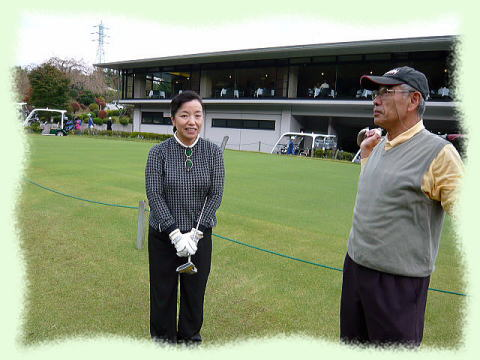
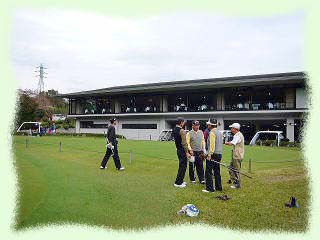

| 横浜国立大学工学部第四寮 |
| 第４回弘南寮ゴルフ大会 |
| 時 ： 平成１９年１１月２日（金） |
所 ： 小田原湯本カントリークラブ |
|  |  |
| これまで千葉方面での会が続いていたので、今回は伊勢本さんの肝いりで神奈川方面での開催となった。 小田原湯本カントリーは、よくもまぁこんな山の中を切り開いたものだと、これを設計した人の想像力の豊かさに感心させられた、起伏の激しいコースでした。 前日まで心配された天候も、秋晴れの快晴とはいかなかったが、先ずは照らず降らず、絶好のゴルフ日和となった。 ６名の参加者から始まったこの大会も、年々参加者が増え、今回の第４回大会は１５名の参加を得て大盛会であった。今回は已む無く欠席された方も多かったので、次回は２０名を越える盛会になるものと思われます。 特に今回は初めての女性の参加者である 稲田夫人を迎え、野郎だけの会に華やぎと彩りを添えて戴きました。 稲田さんご夫妻の勇気ある行動力に、敬意と謝意、及び大歓迎の意を表したいと思います。 次回には、竹内さん、嵐さん、伊勢本さんの奥様も参加予定と聞いており、益々賑やかな会になるものと、期待しています。 |
稲田夫人 |
出発前の勇姿
| 第１組 野村、竹内、伊勢本、秋山 | 第２組 高石、嵐、高橋、外池 | ||
 |
|||
| |
|||
| 第３組 中野、古市、稲田夫人、山之内 | 第４組 稲田、村上、猪原 | ||
| 反省会 及び 成績発表 |
| 熾烈な戦いの後の楽しみは、和気藹々の成績発表と反省会です。 成績発表 ベストグロス 秋山正樹さん ４２−４１＝ ８３ ペリア方式による グロス ネット 優勝 山之内克彦さん ４４−４８ ７３．１ 第２位 野村慎一さん ４４ - ４０ ７３．３ 第３位 稲田浩一さん ４３−４３ ７４．２ |
| コンペ一番の名誉は ベストグロス賞 だと思いますが、試合前の申し合せにより、ベスグロとドラコンは取る人が、大体毎回決まっているので、賞品なし という事になりました。秋山さんには、名誉を称える拍手を送りたいと思います。 |
| 全員揃って 記念撮影 |
| 前列左から： 野村慎一 （電工４０） 古市一雄 （機械３４） 山之内克彦 （機械３４） 稲田ひとみ （稲田浩一氏夫人） 高石周志 (電工３６） 稲田浩一 （電工３８） 後列左から： 猪原暉雄 （造船３７） 外池久雄 （建築４０） 村上処直 （建築３５） 高橋千穐 （応化３７） 嵐 雅彦 （電化３４） 伊勢本幸雄 （造船３５） 竹内哲夫 （造船３１） 秋山正樹 （建築３８） 中野 宏 （機械３８） |
次回は高石さんが幹事役を名乗り出られたので、銚子〜潮来 方面で開催される予定です。 （以上 文責／猪原）